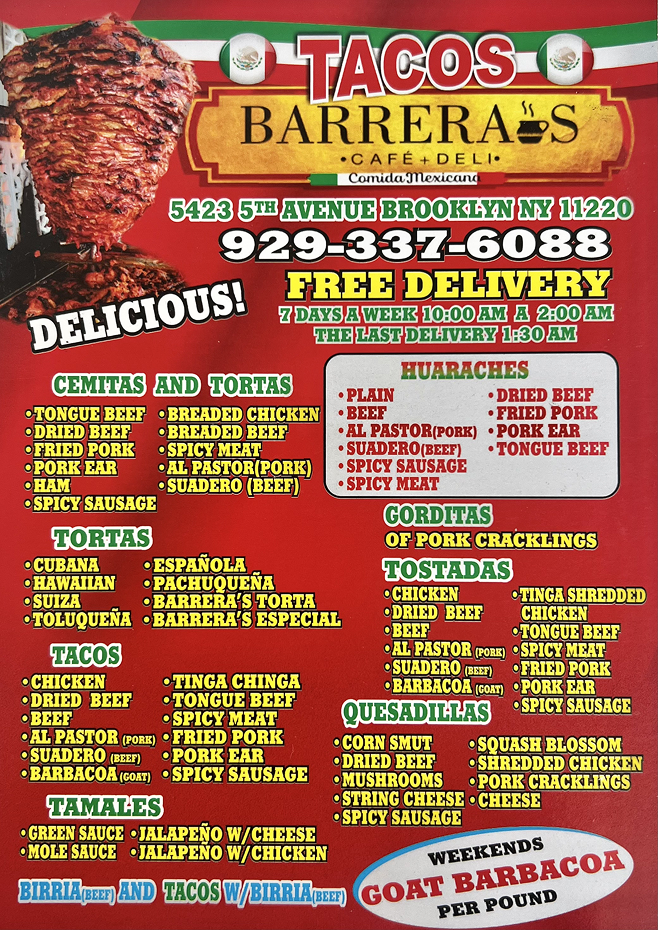
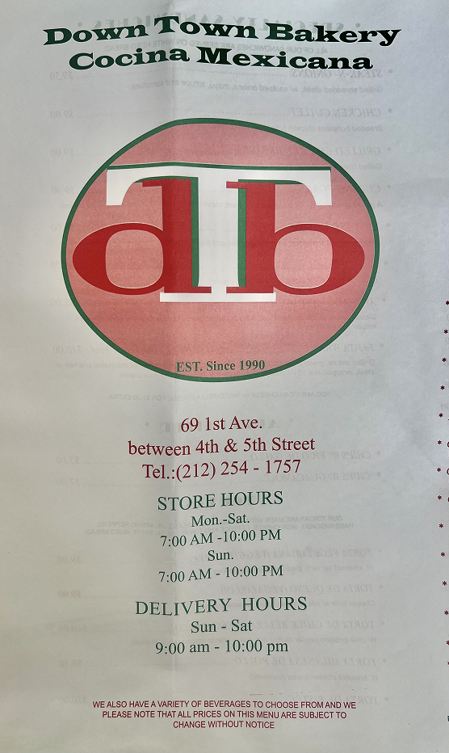
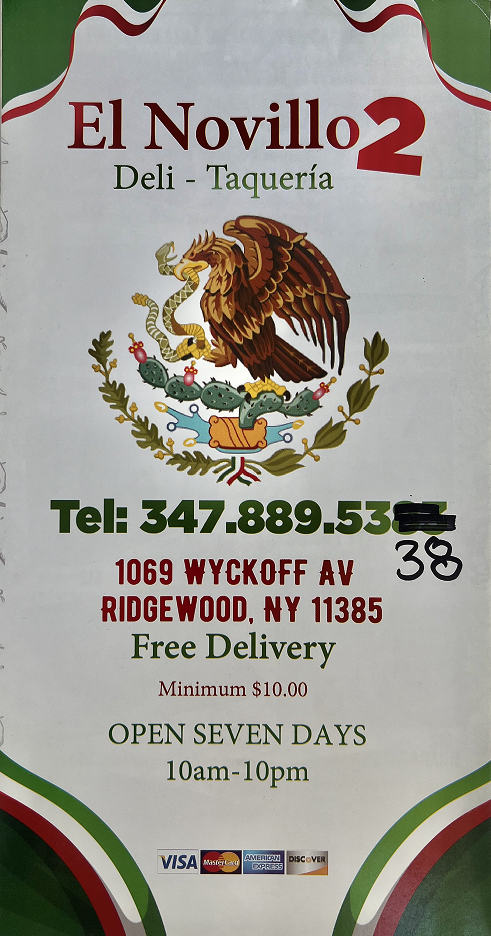
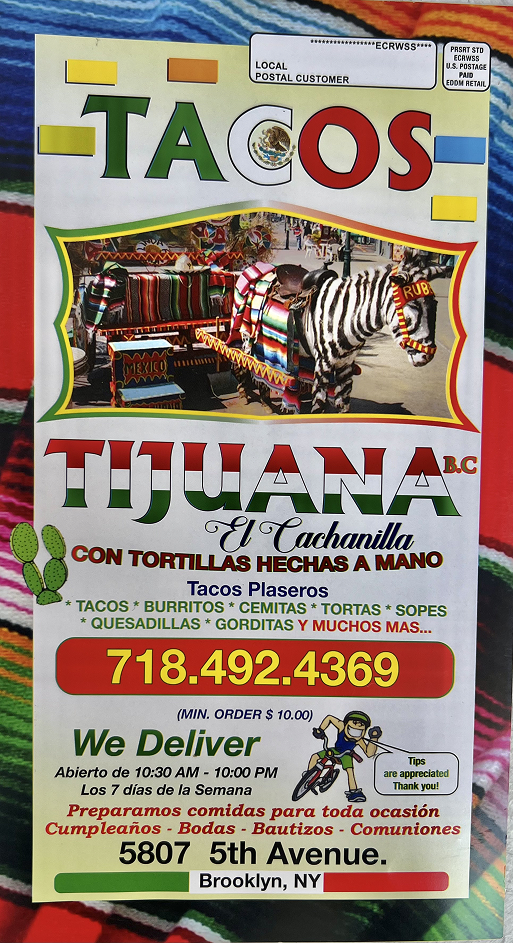
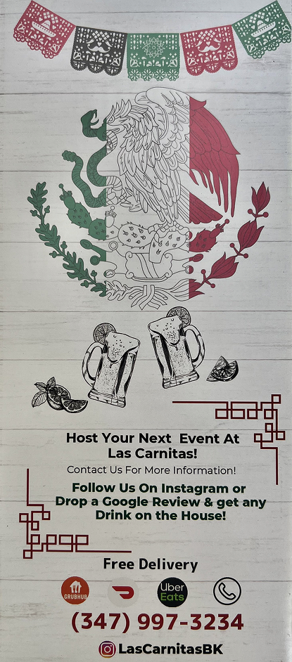

intro
99% of Americans live near a Mexican restaurant. New York City is home to roughly 1,800 Mexican restaurants, up from just 150 in the entire Northeast in 1980. The aesthetics of Mexican food have been adapted, standardized, and filtered through decades of Tex-Mex conventions, regional American tastes, and the economics of running a restaurant in a particular neighborhood. “That you have a nation lusting after tequila, guacamole, and tres leches cake isn't an exercise in culinary neocolonialism but something closer to the opposite. By allowing itself to be endlessly adaptable to local tastes, Mexican food has become a primary vehicle for exporting the culture of a long-ridiculed country to the far corners of the globe.” [Taco USA] Restaurants could be considered an embassy-of-sorts, so what does it mean when the embassy must make a profit in west Bushwick in 2026? What the owner of the establishment chooses to represent themselves as visually; through their logo, through their signage; to attract, coddle, and entertain costumers ultimately tells us a lot about what the audience (Americans) expects from not only Mexican restaurants, but Mexico itself.
methodology
Starting in June 2025, we collected an archive of Mexican restaurant ephemera from five neighborhoods to survey how restauranteurs, print
shops, sign painters, and business owners tackled the assertion of being visually Mexican when attracting customers. We went to Bushwick,
Sunset Park, Jackson Heights, Williamsburg, and the Lower East Side.
We chose Bushwick, Sunset Park, and Jackson Heights due to their Mexican demographic presence since the 2000s. Within the Bushwick neighborhood, we
chose to survey both East and West sides to capture the effects of gentrification over the past couple years. We chose the LES and Williamsburg for
similar reasons: both neighborhoods have undergone rapid demographic in the past two decades, and we were interested in how restauranters in these areas
may be tailoring their offerings to the newer, relatively affluent residents.
Our collection consists of # menus, # business cards, # stickers, # tote bags, # photographs, and # interviews. Together, they form a small sample of the
aesthetic trends being used to sell Mexico.

We named these trends; Cowboy, Folklore, Rotulo, and Flag, based on their overlapping characteristics.

After categorizing our collection, we conducted a survey of 75 people asking them about their associations and relationships to colors, symbols, fonts, and signage from our four categories. The survey aimed to further understand the relationship between the audience [consumer] and design.





Menu A: Heavy use of red and yellow with bold typography.
Results
Early layers showed heavy reliance on symbols, while later layers revealed a shift toward composition and color as dominant interpretive tools.

Analysis
The findings suggest that visual perception moves from immediate recognition to deeper structural interpretation, before collapsing back into simplified cues for rapid understanding.